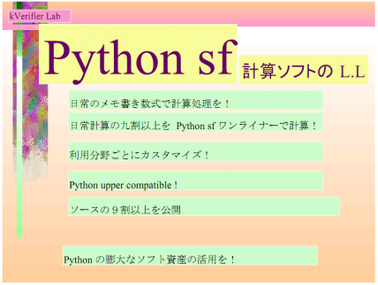
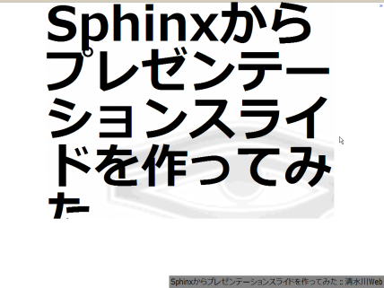

PyCon mini JP
このサイトを検索
ホーム
参加登録フォーム
講演リスト
参加者の皆様へ
プロジェクト概要
プロジェクト運営チーム
プロジェクトの状況
ToDo
マイルストーン
ファイル添付
開催報告
1.レポートへのリンク集
2.午前中のセッション
3.ランチLT
4.午後のセッション
5.ライトニングトーク
6.写真集
7.動画集
8.アンケート結果
サイトマップ
PyCon mini JP (2011年1月29日:土曜日)
から
3542
日経過
スポンサー
アリエル・ネットワーク 株式会社
株式会社gumi
株式会社ビープラウド
株式会社Nexedi
協力
楽天株式会社
株式会社CEREVO
オライリー・ジャパン
CodeZine
ディスカッションに参加しませんか
ディスカッションへの参加
最近の更新履歴
2011/2/28 反省会議事録
Takayuki Shimizukawa 移動
1.レポートへのリンク集
Takanori Suzuki 編集
ホーム
Takanori Suzuki 編集
PyCon mini JP 2011/1/29 にご来場いただきありがとうございました
Takayuki Shimizukawa 作成
ToDo
Takanori Suzuki アイテムを編集
View All
開催報告
>
5.ライトニングトーク
目次
1
App Engineと非同期とテストと私
2
Python x Djangoによるソーシャルアプリ開発事例
3
Infopile
4
JSON-RPC 2.0
5
グローバルPloneコミュニティと開発スタイル
6
遷移図生成ツールblockdiagの紹介
7
Benchmarker
8
Sphinxでプレゼンテーションスライドを作ってみた
9
App Engineの紹介
10
IKAZUCHI
11
量子力学のグラフィックな説明

App Engineと非同期とテストと私
村岡 友介
(
@jbking
)
Who moved my SPAM?(
http://blog.jbking.org/
)
App Engineと非同期とテストと私
View more
presentations
from
Yusuke Muraoka
.
gaedeferred
http://pypi.python.org/pypi/gaedeferred
Who moved my SPAM?: gaedeferred 0.2.1 リリース
Python x Djangoによるソーシャルアプリ開発事例
堀内 康弘
(
@horiuchi
)
株式会社gumi 取締役最高技術責任者
blog.hori-uchi.com(
http://blog.hori-uchi.com/
)
20110129 pyconminijp horiuchi
View more
presentations
from
Yasuhiro Horiuchi
.
Git - Fast Version Control System
capistrano
gumi Engineer’s Diary
Infopile
石本 敦夫
(
@atsuoishimoto
)
アクシスソフト(株) シニアアーキテクト
atsuoishimotoの日記(
http://d.hatena.ne.jp/atsuoishimoto/
)
InfoPile Open Source Project
http://www.infopile.jp/trac-infopile/wiki
JSON-RPC 2.0
小田切 篤
(
@aodag
)
BeProud
aodag blog(
http://blog.aodag.jp/
)
Json rpc 2_0
View more
presentations
from
Atsushi Odagiri
.
jsonrpc2
http://pypi.python.org/pypi/jsonrpc2
グローバルPloneコミュニティと開発スタイル
寺田 学
(
@terapyon
)
ブログ — 株式会社CMSコミュニケーションズ(
http://www.cmscom.jp/blog
)
PyCon minijp LT terada (How to Develop on Plone)
View more
presentations
from
Manabu Terada
.
遷移図生成ツールblockdiagの紹介
小宮 健
(
@tk0miya
)
タイムインターメディア
遷移図生成ツール blockdiag の紹介 @ Pycon mini JP 2011/01
View more
presentations
from
Takeshi Komiya
.
blockdiag
http://pypi.python.org/pypi/blockdiag
Interactive shell for blockdiag
http://blockdiag.appspot.com/
Benchmarker
桑田 誠
(
@makotokuwata
)
kuwata-lab(
http://www.kuwata-lab.com
)
Benchmarker - A Good Friend for Performance
View more
presentations
from
kwatch
.
https://gist.github.com/800384
https://gist.github.com/801429
Benchmarker
http://pypi.python.org/pypi/Benchmarker
Sphinxでプレゼンテーションスライドを作ってみた
清水川 貴之
(
@shimizukawa
)
清水川Web(
http://www.freia.jp/taka
)
(↓画像をクリックすると資料の表示ページに遷移します)

S6を組み込んだ版->
Sphinxからプレゼンテーションスライドを作ってみた(S6)
HTML slide
を組み込んだ版->
Sphinxからプレゼンテーションスライドを作ってみた(HTML Slide)
App Engineの紹介
松尾
貴史
(
@tmatsuo
)
Google, Inc.
Kays daddy(
http://blog.shehas.net/
)
App Engine の紹介
Google プレゼンテーション
kay-framework
http://code.google.com/p/kay-framework/
Google-App-Engine-Japan | Google グループ
BigTable 論文
プログラミング Google App Engine
http://www.google.co.jp/intl/ja/jobs/
IKAZUCHI
森本 哲也
(
@t2y
)
株式会社データ変換研究所
forest book(
http://d.hatena.ne.jp/t2y-1979/
)
Ikazuchi
View more
presentations
from
Tetsuya Morimoto
.
ikazuchi
http://pypi.python.org/pypi/ikazuchi
ikazuchi - simple translation helper — ikazuchi v0.1 documentation
量子力学のグラフィックな説明
小林 憲次
kVerifeir Lab Home Page(
http://www.nasuinfo.or.jp/FreeSpace/kenji/
)
(↓画像をクリックすると資料の表示ページに遷移します)
kVerifeir Lab
http://www.nasuinfo.or.jp/FreeSpace/kenji/
Comments


{kind=link}